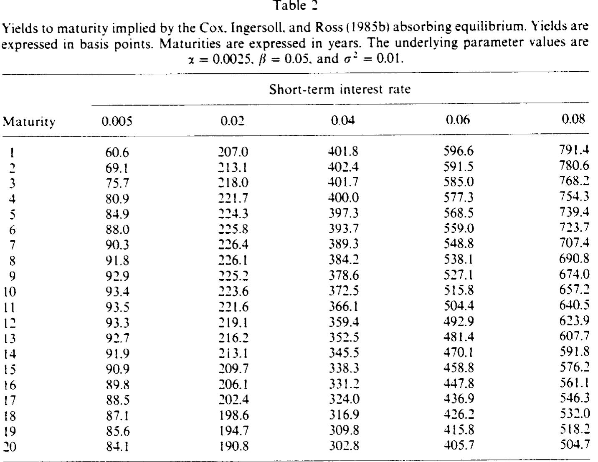
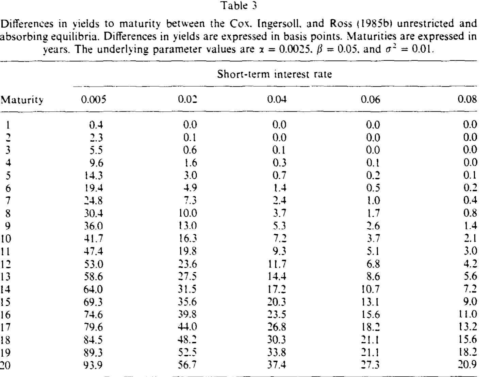
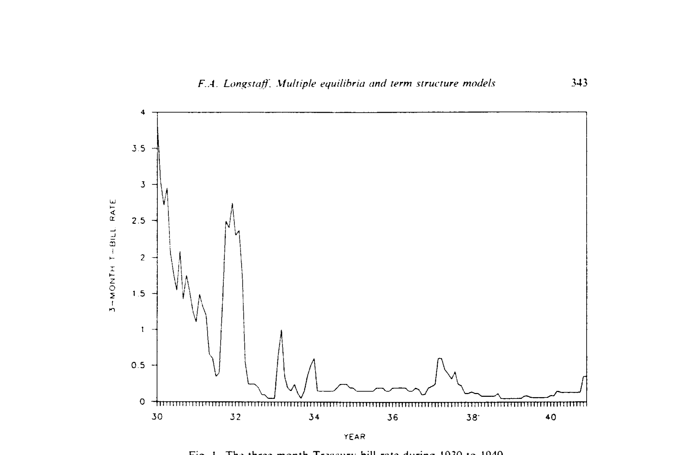
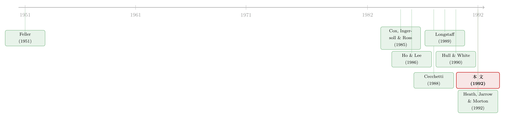

利率碰到「零」那一刻，债券到底值多少钱？
本文读的是 Longstaff (1992, Journal of Financial Economics)：人人都以为 Cox-Ingersoll-Ross 那条「唯一」的债券定价公式是模型推出来的结果，Longstaff 却指出，唯一性其实是被悄悄塞进去的一个边界条件。一旦短期利率真的会碰到零，同一个 CIR 框架里就藏着一整族不同的均衡，「教科书公式」只是其中假设利率会立刻弹回来的那一个。换一个对零点的假设（比如「吸收」），债券价格随之改变——而且能生成 CIR 原版做不出来的收益率曲线驼峰。
1 一个你以为早已盖棺论定的问题
学过利率衍生品的人，几乎都会背 Cox, Ingersoll, and Ross（下称 CIR）那条贴现债券公式：
$$D(r,\tau) = A(\tau)\exp\big(-B(\tau)\,r\big)$$
短期利率 r 是唯一的状态变量，给定它，任意期限 τ 的零息债券价格就这么一锤定音。1985 年那篇 Econometrica 几乎成了一整代固定收益模型的地基。它的好处之一，就是「干净」——一个一般均衡 (general equilibrium) 模型，一条解析解，没有多余的自由度。
可正是这份「干净」，让人忘了去问一个最基础的问题：这条解，凭什么是唯一的？
Longstaff 在这篇只有十二页、却足够锋利的短文里，把这层窗户纸捅破了。他的主张听上去近乎挑衅：CIR 框架并没有逼出唯一的债券价格；它能容纳「一整族」彼此不同的均衡解。我们之所以一直只看到那一条，是因为 CIR 在不经意间替我们做了一个关于「利率碰到零会怎样」的假设——而这个假设，本可以是别的样子。
2 唯一性，藏在「零」这个奇点里
要看清问题出在哪，先把模型的骨架摆出来。CIR 让（风险调整后的）短期利率服从一个平方根过程：
$$dr = (\alpha - \beta r)\,dt + \sigma\sqrt{r}\,dZ$$
这里 β = κ + λ，κ 是均值回复速度，λ 是利率风险的市场价格 (market price of interest-rate risk)。在 CIR 的对数效用假设下，债券的均衡瞬时期望超额收益等于它与代表性投资者组合收益的协方差，于是债券的均衡期望收益率写成
$$r + \lambda\, r\,\frac{D_r}{D}.$$
把它和伊藤公式给出的期望收益率画等号，就得到那条所有人都熟悉的基本定价方程 (fundamental valuation equation)：
再加上到期条件
$$D(r,0) = 1,$$
似乎一切就齐了。但真正关键的一步在于：一个偏微分方程要有唯一解，光有终端条件 D(r,0)=1 还不够，还得看边界 r=0 和 r=∞ 处能不能、需不需要再加条件。Longstaff 借用 Karlin and Taylor (1981) 的边界分类，把这两个奇点逐一审了一遍。
无穷远那一头好办：r=∞ 在有限时间内不可达，所以不能、也不必在那里加边界条件，债券价格在 r→∞ 时的行为由方程本身隐含给定。
r=0 这一头，才是全篇的命门。这里的性质由 Feller (1951) 那个经典判据决定，而它只取决于 α 与 σ² 的相对大小：
- 当
0 < σ² < 2α时，零点不可达 (inaccessible)。利率永远碰不到零，方程无须任何额外边界条件，解唯一——这正是 CIR 原文落脚的情形。 - 当
0 < 2α < σ²时，零点变成一个正则的、可达的 (regular / attainable) 边界。利率会真的走到零。
于是反转出现了：一旦零点可达，方程 (3a) 加到期条件 (3b) 就不再有唯一解。要把价格钉死，你必须额外指定「利率走到零之后会怎么办」。而 Karlin and Taylor 早就说过，对一个正则边界，可以一致地规定五花八门的行为——完全吸收、反射、弹性或黏性壁垒，甚至「粒子到达边界后停留一段服从指数分布的时间、再按某个概率分布跳回内部」。
换句话说，「利率在零点的行为」是一个自由度。不同的假设映射成不同的均衡边界条件，再映射成基本定价方程的不同解。CIR 的唯一性，不是推出来的，是选出来的。
这个 2α ≥ σ² 的门槛对做过 CIR 模型校准的人并不陌生——它就是保证利率严格为正、不触零的那个 Feller 条件。Longstaff 的洞见是把这条「技术性约束」翻译成了一句经济学命题：当它不成立时，模型作者必须替投资者回答一个本来回避掉的问题。
3 三种均衡：弹回、吸收，还是为数据量身定做
Longstaff 给了三个例子，把这个自由度具体化。
首先是「无限制均衡」(unrestricted equilibrium)。假设把动态 (1) 一直延伸到 r=0、不加任何别的限制：利率一碰到零就立刻返回正值。此时 r=0 处利率是局部确定的，dr = α\,dt，债券也局部无风险，于是均衡要求债券在 r=0 的瞬时收益率为零，对应的边界条件是 αD_r - D_τ = 0。可以验证，CIR 那条解析公式 (5) 恰好满足它——
$$B(\tau) = \frac{2\big(\exp(\gamma\tau)-1\big)}{(\beta+\gamma)\big(\exp(\gamma\tau)-1\big)+2\gamma}$$
——也就是说，人人背诵的 CIR 公式，其实就是「利率到零立刻弹回」这一假设下的均衡。它在 r=0 处收敛到一个良好定义的正值 A(τ)，从而隐含着「即便在零利率，远期利率也严格为正」。
接着，一个自然的问题是：如果利率不弹回来呢？
这就是「吸收均衡」(absorbing equilibrium)——利率一旦触零，就被永久吸收在零。经济含义很硬核：吸收发生时所有远期利率必须为零（否则不满足市场出清），而债券不再有随机性，无套利又要求它在 r=0 的期望收益为零。这两个条件一起，恰好等价于边界条件
$$D(0,\tau) = 1.$$
在这个边界条件下解方程，得到的吸收均衡债券价格 (6) 不再是简洁的指数仿射形式，而要用到伽马函数与不完全伽马函数 P(1 - 2α/σ²,\, C(\tau)r)：它可以拆成 CIR 那一项乘以「利率在债券存续期内尚未触零的概率」，再加上一项「触零那一刻 1/A(τ-t) 的期望」——后者正是用 Longstaff (1990) 里那条首次触零密度（first-passage density）算出来的。形式复杂，但直觉清楚：吸收，等价于「未来现金流不再被贴现」，效果就像提前偿付了本金。
然后是第三类「经验均衡」(empirical equilibria)：只要满足市场出清与无套利（即任何边界条件都得隐含非负远期利率、以及零点处的均衡期望收益），你完全可以直接挑一个能拟合当前观测到的期限结构的边界条件。这一下，模型就多出一个用来贴合现实曲线的自由度。
4 数字会说话：吸收均衡，凭空生出一个驼峰
光说「不同」还不够，但真正要紧的是，这些差异到底有多大、长什么样。Longstaff 取了一组参数：α = 0.0025、β = 0.05、σ² = 0.01，对应利率的长期均值 α/β = 0.05。注意 σ² = 0.01 大于 2α = 0.005——零点可达，多重均衡在这组参数下是「活的」，不是纸上谈兵。
他把无限制均衡（表 1）与吸收均衡（表 2）的到期收益率并排列出，再在表 3 里报告两者之差。

Table 2
第一个发现近乎反直觉：当 r = 0.02 时，无限制均衡的期限结构是单调上升的，而吸收均衡却在七年期附近鼓出一个驼峰 (hump)。这一点分量很重——长期以来对 CIR 无限制模型的一条常见批评，正是它在较长期限上生不出驼峰。只是换了一个零点边界条件，这个「缺陷」就消失了。
第二个发现是系统性的：吸收收益率永远低于无限制收益率。前面的直觉解释了原因——吸收意味着现金流不再贴现，等于加速偿付本金，债券更值钱、收益率更低。

Table 3
第三，两者之差（表 3）随期限递增、随 r 递减：期限越长，存续期内触零的概率越大；r 越高，触零概率越小。量级一点都不小——在 r = 0.005、二十年期时，差异高达 93.9 个基点；即便在高于长期均值的利率水平上，差异在经济上也相当可观。这就把全文的核心钉死了：仅仅通过在 r=0 处换一个边界条件，我们就在拟合真实期限结构时获得了相当大的灵活性。
值得一提的是，这套逻辑并不只属于 CIR。Longstaff 在第 4 节里指出，他自己 1989 年那个基于双平方根过程 (double square root process) 的非线性模型同样存在多重均衡：当 0 < 2α < σ²，零点可达，吸收均衡照样由 D(0,τ)=1 给出。换句话说，「多重均衡」是这一类带可达边界的一般均衡模型的通病，而非某个模型的偶然。
5 那么，到底该信哪一个？让 1930 年代的数据来挑
理论给了你一族均衡，可现实里利率只走一条路。选择终究是个经验问题：短期利率在零点附近究竟更像弹回、反射，还是黏滞？
Longstaff 把目光投向了一个绝佳的天然实验室——大萧条。他取了 Cecchetti (1988) 整理的 1930 年 1 月至 1940 年 12 月的三个月期国库券收益率，理由很实在：这是上个世纪利率最低的一段时期，且这期间国库券利息免税，干扰最小。

Figure 1: The three-month Treasury-bill rate during 1930 to 1940
图 1 一目了然：那十年里，国库券收益率长时间贴着零运行，而且极低的利率水平倾向于「赖着不走」，而不是立刻反弹回高位。这个画面更像「黏性 (sticky)」边界，而不是「反射 (reflecting)」边界——后者会在低利率处诱发明显的均值回复。数据也佐证了这一点：收益率月度变化的一阶序列相关系数为 0.157，在 0.10 水平上显著。如果是反射行为，低利率处应当出现把利率往上推的均值回复，可数据里看不到。
于是结论收束：模型给了你自由度，数据替你做了取舍——至少在那段「利率躺在地板上」的岁月里，黏性边界比反射更贴合现实。
别把这篇文章误读成「CIR 错了」。Longstaff 没有否定 CIR，他是在 CIR 的框架内部找到了更多被忽略的房间。真正被否定的，是「这个框架只有一个出口」这种错觉。
6 文献脉络
要体会这篇短文的分量，得把它放回那条「如何给利率期限结构定价」的长河里。
源头在数学。Feller (1951) 关于奇异扩散过程的工作，给出了判断一个扩散在边界（如零点）处可达与否的判据——这正是 Longstaff 全篇论证的钥匙；Karlin and Taylor (1981) 则把正则边界上「能规定哪些行为」编成了目录。接着，Cox, Ingersoll, and Ross（1985a, 1985b）把这套随机分析装进一般均衡，造出了那条单因子、解析、广为流传的债券公式，奠定了整个领域的范式。
然后，平行发展出另一支「无套利」传统：Ho and Lee (1986)、Hull and White (1990)、Black and Karasinski (1991)、以及 Heath, Jarrow, and Morton (1992)，它们放弃从效用出发、转而直接让模型贴合当前的收益率或远期利率曲线。Longstaff 自己也在这条河里——他 1989 年的非线性一般均衡模型、1990 年关于收益率期权与首次触零密度的工作，都为本文提供了直接的弹药。Cecchetti (1988) 对大萧条期间利率的重新估计，则恰好递上了检验所需的那段历史数据。

本文站的位置很微妙：它一只脚踩在 CIR 的「一般均衡」传统里，另一只脚伸向无套利传统的精神——通过挑选 r=0 的边界条件来拟合现实曲线，本质上就是在一般均衡的外壳里，借来了 Ho-Lee、Hull-White、HJM 那种「贴合当前曲线」的灵活性。它像是一座连接两支传统的小桥。（关于「贴合定价」与「预测」难以兼得的张力，可参见《把利率曲线的「定价」和「预测」装进同一个模型，为什么这么难？》；关于零下界如何困扰这类模型，可参见《利率为什么「跌不破零」却又能「负相关」》。）
7 评论与延伸（Q&A + 研究方向）
(a) 几个可能的疑问
Q：这和 CIR 那个「2κθ ≥ σ²」的 Feller 条件是不是一回事？
是同一个数学条件，但解读不同。在 CIR 的语境里，
2α ≥ σ²（即2κθ ≥ σ²）通常被当作一个「保证利率为正」的技术性假设，一笔带过。Longstaff 的贡献是指出：当这个条件不成立、零点可达时，模型并不是「坏掉了」，而是变得「不完整」——它需要建模者额外回答「触零之后怎么办」，而这个答案不唯一。
Q：多重均衡是不是意味着模型有套利、或者不自洽？
不是。每一个均衡都同时满足市场出清与无套利：任意候选的边界条件都被要求隐含非负远期利率，并且在
r=0处给出均衡的期望收益。它们都是「好」的均衡，区别只在于对利率零点行为的经济假设不同。这恰恰是文章微妙的地方——不是哪个对哪个错，而是它们回答的是不同的经济情景。
Q：吸收均衡为什么能生出驼峰，这在直觉上说得通吗？
说得通。吸收的经济含义是「触零后现金流不再贴现」，等于加速偿付本金，因此吸收收益率系统性地低于无限制收益率，且这个折扣随期限拉大（触零概率上升）、随当前利率上升而缩小。这种「随期限非单调」的压低，叠加在原本上升的曲线上，就可能在中长端鼓出一个驼峰——而单调贴现的无限制均衡做不到。
Q：用大萧条的数据来挑边界条件，靠谱吗？
这是全文识别上最薄弱、也最诚实的一环。样本只有
N = 132个月、单一国家、单一历史时期，而且作者自己就承认「哪种边界行为最现实终究是个经验问题」。0.157的序列相关在0.10水平显著，是「弱证据」而非「铁证」。它足以说明「黏性比反射更像」，但远不足以精确校准黏性的具体形式。
Q：这对今天的零利率/负利率环境还有意义吗？
意义反而更大。CIR 写作的年代，零利率是个数学边角料；而在 2010 年代之后，短端长期贴地、甚至转负，「利率在零附近怎么行为」从理论洁癖变成了第一性的实务问题。Longstaff 这篇文章相当于提前三十年告诉你：当短端真的躺在地板上，你选的边界条件会实打实地改写中长端的定价。（相关背景可参见《利率长跌二十年，如何亲手喂大了影子银行》。）
Q：那 CIR 那条公式是不是就该被弃用？
不。当
σ² < 2α（利率离零足够远、波动足够小）时，零点不可达，唯一性回归，CIR 公式就是那个唯一解，照用不误。本文的边界条件之争，只在利率会真正触零的参数区域里才被激活。
(b) 几个可能的研究问题与提案
1. 用现代零利率数据重做边界条件的「选美」。
【经济故事】Longstaff 只有 1930 年代一个样本。日本（1999 年后）、欧元区（2014 年后）、美国（2008–2015、2020–2021）都提供了多段「利率贴零」的时期，且数据频率与质量远胜大萧条。到底是黏性、反射、还是「停留+跳回」最贴合？不同经济体是否不同？ 【可行性】高。短端利率与 OIS 数据公开易得，识别就是把序列相关、在零点的滞留时间、触零后的反弹速度做成可检验的矩条件。难点在于零下界政策（如负利率、收益率曲线控制）本身改变了边界行为，需要把政策作为协变量处理。
2. 把「边界条件自由度」搬到公司信用利差上。
【经济故事】结构化信用模型里，违约边界（资产价值触及某阈值）和这里的利率零点边界在数学上高度同构——都是一个可达边界加一个吸收/反射假设。公司债定价对「触界后回收 vs. 立即清算」的假设，是否也存在类似的多重均衡，从而被用来拟合观测到的信用利差曲线？ 【可行性】中。理论同构很干净，但需要把「回收率行为」映射成边界条件，并用公司债横截面（如 TRACE）识别。挑战在于信用市场流动性噪声大，分离「边界假设」与「流动性溢价」不容易。
3. 边界条件错设的定价误差，到底有多贵？
【经济故事】如果真实世界是黏性边界，而你用了无限制（CIR）公式去定价长期债券或利率期权，误差在表 3 里看高达近百个基点。能否构造一个「错设成本」的度量，量化在不同利率水平、不同期限、不同波动率下，用错边界条件会损失多少？ 【可行性】高。纯模型 + 蒙特卡洛即可，不需要复杂数据。可直接复刻本文参数、再扩展到期权（用 Longstaff 1990 的首次触零密度），输出一张「错设成本地图」。属于「小而扎实、教学价值高」的题目。
4. 多重均衡与利率衍生品的隐含波动率曲面。
【经济故事】既然不同边界条件生成不同的债券价格曲线，它们多半也生成不同的利率期权价格，从而是否能解释利率期权隐含波动率在零利率附近的异常形态（如「贴地」时段的偏斜变化）？ 【可行性】中。需要把吸收均衡的不完全伽马解推广到期权定价，数值上可行但繁琐；实证端需要 swaption 或 cap/floor 数据，且要小心剥离做市商库存与流动性因素。
参考文献
Black, F., and P. Karasinski (1991). Bond and option pricing when short rates are lognormal. Financial Analysts Journal 47(4), 52–59.
Cecchetti, S. G. (1988). The case of the negative nominal interest rates: New estimates of the term structure of interest rates during the Great Depression. Journal of Political Economy 96(6), 1111–1141.
Cox, J. C., J. E. Ingersoll, and S. A. Ross (1985a). An intertemporal general equilibrium model of asset prices. Econometrica 53(2), 363–384.
Cox, J. C., J. E. Ingersoll, and S. A. Ross (1985b). A theory of the term structure of interest rates. Econometrica 53(2), 385–407.
Feller, W. (1951). Two singular diffusion problems. Annals of Mathematics 54(1), 173–182.
Heath, D., R. Jarrow, and A. Morton (1992). Bond pricing and the term structure of interest rates: A new methodology. Econometrica 60(1), 77–105.
Ho, T. S. Y., and S. B. Lee (1986). Term structure movements and pricing interest rate contingent claims. Journal of Finance 41(5), 1011–1029.
Hull, J., and A. White (1990). Pricing interest-rate derivative securities. Review of Financial Studies 3(4), 573–592.
Karlin, S., and H. M. Taylor (1981). A Second Course in Stochastic Processes. Academic Press, New York.
Longstaff, F. A. (1989). A nonlinear general equilibrium model of the term structure of interest rates. Journal of Financial Economics 23(2), 195–224.
Longstaff, F. A. (1990). The valuation of options on yields. Journal of Financial Economics 26(1), 97–121.
Longstaff, F. A. (1992). Multiple equilibria and term structure models. Journal of Financial Economics 32(3), 333–344.